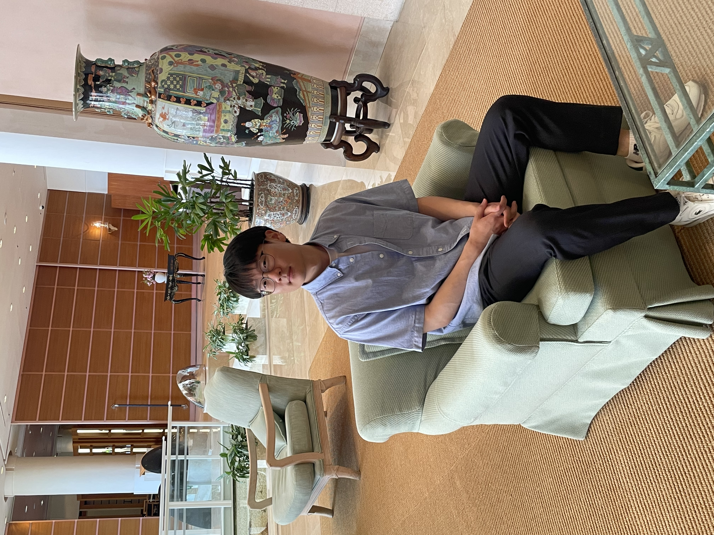

About Me
I'm Seunghyun, a researcher who enjoys exploring new ideas with a cup of coffee. I am interested in multiphysics modeling, computational fluid dynamics, and Scientific Machine Learning.
- Name: Seunghyun Sim
- Address: 100 Inha-ro, Michuhol-gu, Incheon 22212, South Korea
- Email: simsh529master@inha.edu & simsh529@gmail.com
Education
M.S. Student in Mechanical Engineering
Inha UnivercityI conduct research on multiphysics modeling of fluidized bed reactors (FBRs) and electric smelting furnaces (ESFs) for hydrogen-based ironmaking. I am also interested in reduced-order modeling (ROM) and scientific machine learning (SciML) for digital twins in manufacturing.
B.S. in Mechanical Engineering
Inha UniversityI have maintained a strong interest in core areas of mechanical engineering, including solid mechanics and fluid mechanics. Through two years of undergraduate research internships, I explored a diverse range of engineering problems arising from industrial projects and gained experience in mathematical modeling and computational simulation.